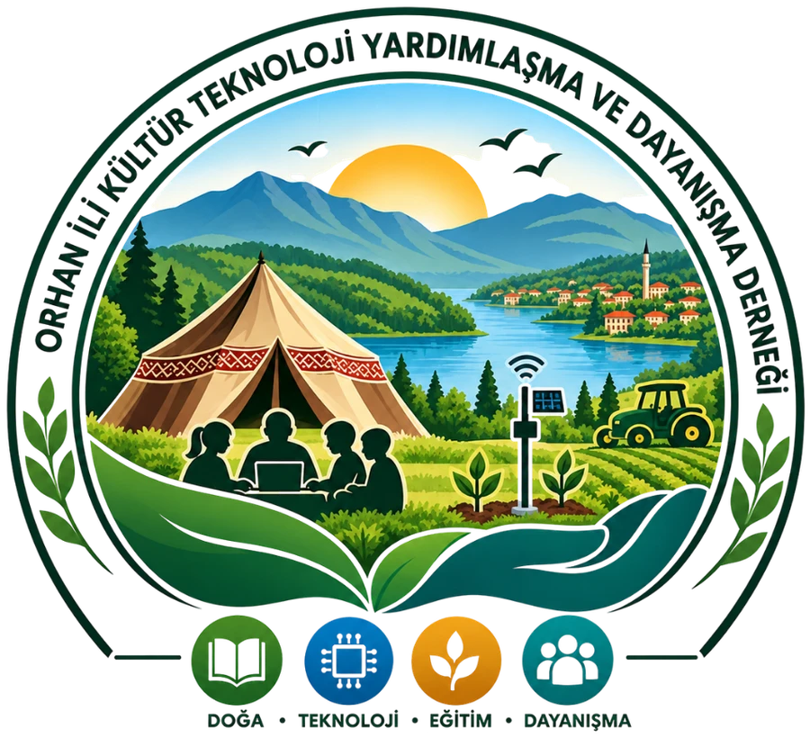
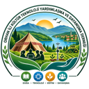
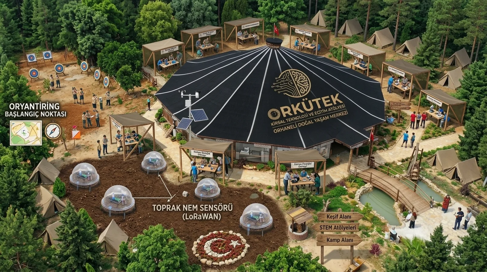

Çocuk ↔ Teknoloji
Kırsalda yaşayan çocukların kodlama, elektronik ve yapay zekâya erişimi sınırlı.
Kırsal KodlamaGenç Maker

ORKÜTEKORHANELİ · BURSA Destek Ol →Orhaneli'nin çocukları ve gençleriyle kırsal yaşamın problemlerini teknolojiye dönüştürüyoruz — ürettiğimiz teknolojiyi de yine Orhaneli'deki çiftçiye, aileye, öğrenciye ve yerel ekonomiye geri kazandırıyoruz.
Kırsal yaşamın problemlerini, Orhaneli'nin çocukları ve gençleriyle birlikte teknolojiye dönüştüren; ürettiği teknolojiyi yine Orhaneli'de çiftçiye, aileye, öğrenciye ve yerel ekonomiye geri kazandıran bir merkez.
Kırsalda yaşayan çocukların kodlama, elektronik ve yapay zekâya erişimi sınırlı.
Sulama, don, toprak nemi, hayvan takibi… Sahadaki gerçek problemler verinin dışında kalıyor.
Doğal Yaşam Merkezi'ne gelen aileler için anlamlı bir hafta sonu programı yok.
Çiftçi odaklı teknoloji platformumuzun mantığını 30 saniyede deneyin: parsellere sensör yerleştirin, telefona düşen uyarıyı görün, doğru zamanda sulayın.
👆Boş parsele tıkla → sensör yerleştir. Sensörlü parsele tıkla → sula. Sensörsüz parsellerin neminden haberin olmaz; sen fark edene kadar kurur.

Çadır, klasik bir sınıf değil. Orhaneli'nin doğal ve kültürel kimliğini teknolojiyle buluşturan küçük ölçekli bir laboratuvar: içeride lehim kokusu, dışarıda orman, göl ve tarla.
Scratch, micro:bit / ESP32, sensör. İlk satır kodun ilk ışığı yaktığı yer.
Ücretsiz / hibeArduino, Raspberry Pi, IoT. Fikirden çalışan prototipe.
Ücretsiz + sponsorNem, sulama, meteoroloji ve veri: tarlanın dilini ölçerek öğrenmek.
Pilot / abonelik2–4 saatlik çocuk atölyesi. Doğa tatili, teknoloji hatırasıyla taçlanır.
ÜcretliTÜBİTAK, yarışma, prototip. Okulla yazılı işbirliği protokolü.
Okul protokolüIoT, GIS ve proje yazımı: bilgiyi çoğaltan çarpan etkisi.
Paydaş destekliHarita, ölçüm, saha verisi. Köyün haritasını birlikte çiziyoruz.
Ücretsiz / hibe20–30 kişilik bir eğitim alanı; ilk günden güvenlik, ilk yardım ve kilitli dolap dâhil. İlk yatırım, talebi doğruladıkça büyür.
Önce dışarıdan bakın: sensör bahçesi, hava istasyonu, oryantiring noktası, kamp alanı. Sonra çadırın içine girin ve atölyeleri tek tek gezin.

Konsept görseli: yapay zekâ destekli tasarım taslağıdır; uygulamada yerleşim ve ayrıntılar değişebilir.
Plan, çadır iç yerleşim çiziminden sadeleştirilmiştir; ölçekli değildir.
Lehim ve ölçüm istasyonlarında robotik kodlama ve sensör tabanlı geliştirme eğitimleri verilerek projeler geliştirilir.
İş istasyonlarında web tasarımından simülasyon ve oyun tasarımına, dijital içerik üretimine kadar yüksek teknoloji alanlarında çalışmalar yapılır.
Geleneksel oyunlar, gölge oyunu, koro, sahne sunum teknikleri ve proje sunumları.
Yörüklere ait dokuma sanatları, yörenin karagöz minyatür dikiş atölyesi, hat sanatı ve benzeri sanatlar icra edilir.
Uluslararası vizyoner spor dalı oryantiring eğitimleri, harita üretimi ve oyun kuralları eğitimleri verilir. Doğal Yaşam Merkezi'nde müsabaka düzenlenmesi ve amatör izcilik kampı kurulması hedeflenir.
Öğrencilere ilk yardım eğitimleri verilir. Yörenin çocuğu ŞUÇA'nın ismi yaşatılarak amatör okçuluk müsabakaları düzenlenir; ilerleyen dönemde at üzerinde ok atma gibi Yörük Türkmen sporları hedeflenir.
Yörenin tarihi dijital panolarda, fotoğraf galerisinde ve VR gözlüklerle; Beyce'nin geçmişten günümüze tarihi ve turizm noktaları sanal gerçeklik ve simülasyon hava gezileriyle tanıtılır.
atölye öğrencisi
toplam eğitim saati
tamamlanan öğrenci projesi
saha sensör prototipi
pilot üretici
aile / turizm etkinliği
kurumsal sponsor ve paydaş
açık yıllık faaliyet ve etki raporu
* 12 aylık uygulama planındaki hedeflerdir; gerçekleşenleri yıl sonunda raporlayacağız.
Çocuklarla çalışan bir kuruluşun en önemli sözü budur. Bunlar, atölye açılmadan önce yazıya dökeceğimiz kurallardır.
Beş bileşen birbirini besler: eğitim, kuluçka, üretim, iş ağı ve bölgesel projeler. Bir bileşene dokunun.
Dernek yapısı, belediye protokolü, Yörük çadırı/uygun alan, ilk eğitimler ve ilk sensör pilotu.
Bursa ve Sakarya'daki okul, üniversite, şirket, kooperatif ve belediyelerle ortak programlar.
Talep ve finansman uygunsa ortak kullanım atölyesi/merkez; programların diğer ilçelere aktarılması. Yalnızca doluluk, gelir, ortaklık ve etki verileri yeterliyse.
Kurucu ekibimiz ve altı çalışma komitemiz hazır; şimdi sıra, bu sinyali daha uzağa taşıyacak dostlarda.
Teknolojik gelişmeleri takip etmek, yenilikçi fikir ve projeler geliştirmek, dijital dönüşümü desteklemek ve gençlerin teknoloji alanındaki bilgi ve becerilerini artırmaya yönelik çalışmalar yürütmek.
Yörenin kültürel mirasını, geleneklerini ve yerel değerlerini korumak, tanıtmak ve gelecek nesillere aktarmak; bölgenin sosyal, kültürel ve ekonomik gelişimine katkı sağlayacak faaliyetler düzenlemek.
Bölgenin tarımsal potansiyelini geliştirmek, kırsal girişimciliği desteklemek, üreticileri yeni yöntem ve teknolojilerle buluşturmak ve tarıma dayalı ekonomik faaliyetlerin gelişmesine katkı sağlamak.
Derneğin amaçları doğrultusunda ulusal ve uluslararası projeler geliştirmek, hibe ve fon kaynaklarını takip etmek, sponsorluk süreçlerini yürütmek; kamu, özel sektör, üniversite ve sivil toplum kuruluşlarıyla iş birlikleri kurmak.
Farklı meslek ve uzmanlık alanlarından yetkin kişileri bir araya getirerek bilgi ve deneyim paylaşımını sağlamak; söyleşi, panel, mentorluk ve kariyer buluşmalarıyla gençlerin kişisel ve mesleki gelişimini desteklemek.
Doğal kaynakların verimli kullanılmasını, çevresel sürdürülebilirliği ve döngüsel ekonomi anlayışını desteklemek; enerji, su, atık yönetimi ve çevre bilinci konularında farkındalık oluşturmak ve sürdürülebilir yerel kalkınma projeleri geliştirmek.
Akıllı Şehirler ve Ulaşım Teknolojisi Uzmanı · Proje / GIS / teknoloji koordinatörü · Harita Mühendisi
Lazer kesim, 3D yazıcı, reklam ve dijital içerik tasarım uzmanı · Mekatronik Teknikeri
Dene-Yap Atölyesi mentörü · Elektrik-Elektronik Mühendisi
Muhasebe / finans · Bütçe ve mali disiplin direktörü
İzcilik sertifikalı eğitimci · Çocuk ve gençlik programları · Fizyoterapist
Sensör teknik destek uzmanı · Elektrik Teknisyeni
İlahiyat
İktisat
Mentor, gönüllü, öğretmen, üretici, mühendis… Komitelerden birine katıl, ağa dâhil ol.
Aidat ve bağışlar derneğin taban gelirini oluşturur; bir sensör düğümü, bir çocuğun ilk lehimi olur.
Yıllık teknoloji/eğitim sponsorluğu veya belirli bir programın sponsorluğu. Ekipman karşılığı ayni destek de kabul.
Bir cumartesi, bir atölye, bir saha günü. Alan uzmanlığınız, çocukların hayatında iz bırakır.
Kullanmadığınız bilgisayar, sensör, Raspberry Pi, 3D yazıcı veya internet altyapısı burada ikinci hayatına kavuşur.
GIS/veri analizi, dijitalleşme, teknik eğitim ve prototip geliştirme hizmetleri; kapsamı ve teslimatı yazılı.
Kamu, yerel ve uluslararası hibe çağrılarında ortak başvuru; tarım, çevre, enerji, kırsal turizm ve kültürel miras.
Amacımız kâr dağıtmak değil. Gelirlerin önemli kısmı; eğitim ekipmanı, uzman hizmeti, internet/sunucu, bakım, yeni sensörler ve öğrenci projelerine geri döner. Ticari faaliyetler dernekten ayrı bir iktisadi işletme ve ayrı muhasebe düzeniyle yürütülür; her yıl faaliyet ve etki raporu yayımlanır.